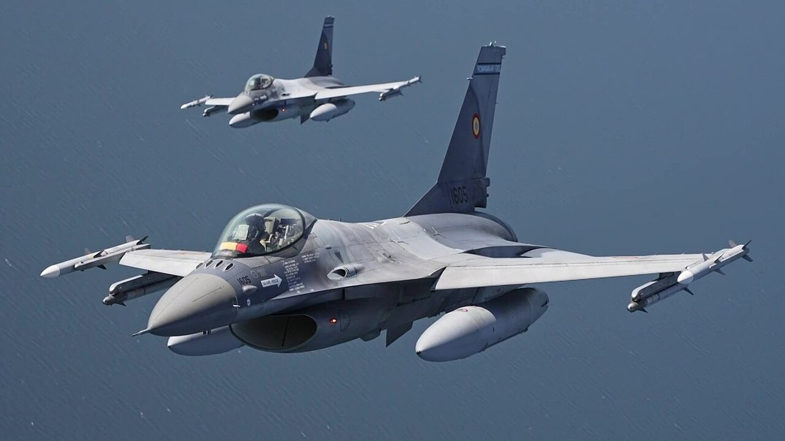

रोमानिया के F-16 ने काला सागर के ऊपर दो ड्रोन गिराए
बुखारेस्ट का कहना है कि शनिवार को सुलिना के पास गिराए गए दो ड्रोन संभवतः 450 किमी प्रति घंटे की गति वाले रूसी गेरान-4 मॉडल थे। NATO परिषद मंगलवार को बैठक करेगी।

मुख्य बिंदु
- रोमानिया के F-16 लड़ाकू विमानों ने शनिवार को देश के काला सागर तटीय क्षेत्र के ऊपर दो ड्रोन मार गिराए। बुखारेस्ट के रक्षा मंत्रालय ने यह जानकारी दी। रोमानिया के तट के पास जहाज़ों पर ड्रोन हमलों की…
- दोनों ड्रोन शनिवार 17 अक्टूबर को 14:59 और 15:01 GMT पर रोमानिया के जल क्षेत्र में घुसे। विमानों ने उन्हें डेन्यूब के मुहाने के पास सुलिना से करीब 20 किलोमीटर दक्षिण-पूर्व में गिराया। पहला ड्रोन…
- रक्षा मंत्री राडू मिरुटा ने रविवार को कहा कि ड्रोन संभवतः रूस के नवीनतम पीढ़ी के ड्रोन थे, जिनकी गति लड़ाकू विमानों जैसी थी। मिरुटा ने कहा, "बीती रात वाले ड्रोन 450 किमी प्रति घंटे की गति से उड़…
रोमानिया के F-16 लड़ाकू विमानों ने शनिवार को देश के काला सागर तटीय क्षेत्र के ऊपर दो ड्रोन मार गिराए। बुखारेस्ट के रक्षा मंत्रालय ने यह जानकारी दी। रोमानिया के तट के पास जहाज़ों पर ड्रोन हमलों की श्रृंखला के बाद यह अब तक का सबसे सख्त जवाब है और NATO परिषद मंगलवार को काला सागर रक्षा पर चर्चा करेगी।
दोनों ड्रोन शनिवार 17 अक्टूबर को 14:59 और 15:01 GMT पर रोमानिया के जल क्षेत्र में घुसे। विमानों ने उन्हें डेन्यूब के मुहाने के पास सुलिना से करीब 20 किलोमीटर दक्षिण-पूर्व में गिराया। पहला ड्रोन रोमानिया के हवाई क्षेत्र में घुसने के दो मिनट के भीतर गिराया गया। दूसरा स्थानीय समय 18:05 पर गिरा, घुसने के पाँच मिनट बाद।
रक्षा मंत्री राडू मिरुटा ने रविवार को कहा कि ड्रोन संभवतः रूस के नवीनतम पीढ़ी के ड्रोन थे, जिनकी गति लड़ाकू विमानों जैसी थी। मिरुटा ने कहा, "बीती रात वाले ड्रोन 450 किमी प्रति घंटे की गति से उड़ रहे थे, जिससे हम सोचते हैं कि वे टर्बोप्रॉप इंजन वाले रूसी गेरान-4 ड्रोन थे। यह पहली बार है जब हमने ऐसे ड्रोन गिराए हैं।" रोमानिया ने ड्रोन के मूल देश की आधिकारिक घोषणा नहीं की है।
आग की चपेट में व्यापार मार्ग
यह कार्रवाई दो रासायनिक टैंकरों पर ड्रोन हमले के कुछ दिनों बाद हुई। दोनों जहाज़ सुलिना नहर के पास लंगर डाले थे, जो डेन्यूब नदी को काला सागर से जोड़ती है और यूक्रेन के निर्यात को विश्व बाज़ारों तक ले जाती है। NATO के एक सैन्य सूत्र ने Reuters को बताया कि टैंकरों पर रूसी ड्रोन से हमला हुआ था। रोमानिया की टीमें सात लापता नाविकों की तलाश अभी भी कर रही हैं।
टैंकर हमले अकेले मामले नहीं थे। पिछले दो हफ़्तों में रोमानिया और बुल्गारिया के तटों के पास कम से कम पाँच और मालवाहक जहाज़ों पर हमले हुए हैं, जिनमें 23 नाविक मृत या लापता बताए गए हैं। रोमानिया की यूक्रेन से 614 किलोमीटर सीमा लगती है और 2022 के पूर्ण आक्रमण के बाद से रूसी ड्रोन के घुसपैठ की शिकायतें बार-बार हुई हैं। बुखारेस्ट ने इस साल की शुरुआत से अपने हवाई क्षेत्र में घुसने वाले ड्रोन गिराने शुरू किए हैं।
यह क्यों मायने रखता है
रोमानिया NATO सदस्य है और उसके विमान अब गठबंधन के हवाई क्षेत्र के भीतर तेज़ गति वाले ड्रोन नष्ट कर रहे हैं। हर कार्रवाई इस बात की परीक्षा है कि मास्को डेन्यूब मार्ग पर कितना दबाव डालेगा और NATO उसे खुला रखने के लिए कितना आगे जाएगा। यह नहर यूक्रेन के बचे हुए निर्यात मार्गों में से एक है।
विदेश मंत्री ओआना तोइउ ने कहा कि उत्तरी अटलांटिक परिषद मंगलवार को काला सागर रक्षा और प्रतिरोध पर बैठक करेगी। NATO के एक अधिकारी ने Reuters से कहा कि गठबंधन "किसी भी संभावित खतरे पर 24/7 प्रतिक्रिया देने के लिए तैयार और सक्षम है।"
आगे क्या होगा
मंगलवार की बैठक अगला निर्णय बिंदु है। डेन्यूब के साथ हवाई रक्षा पर NATO का साझा बयान, पश्चिमी काला सागर में गश्त में कोई बदलाव और सात लापता टैंकर कर्मियों की तलाश के नतीजे देखने वाले होंगे।
टाइमलाइन
- Oct 15, 2026सुलिना नहर के पास दो रासायनिक टैंकरों पर ड्रोन हमला हुआ। सात कर्मी लापता हैं।
- Oct 17, 2026रोमानिया के F-16 ने काला सागर के ऊपर रोमानिया के जल क्षेत्र में घुसे दो ड्रोन सुलिना के पास गिराए।
- Oct 18, 2026रक्षा मंत्री राडू मिरुटा ने कहा कि ड्रोन संभवतः 450 किमी प्रति घंटे की गति वाले रूसी गेरान-4 मॉडल थे।
- Oct 20, 2026विदेश मंत्री ओआना तोइउ के अनुसार उत्तरी अटलांटिक परिषद काला सागर रक्षा और प्रतिरोध पर बैठक करेगी।